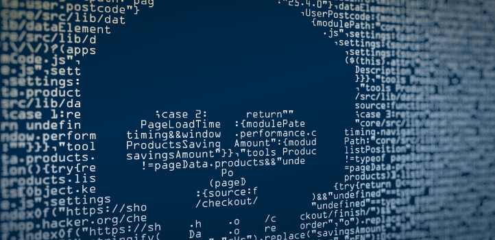

Il est important de choisir un fournisseur d'accès Internet (FAI) qui propose un hébergement sécurisé et de s'équiper d'un pare-feu offrant une protection contre les attaques. Appliquer de manière régulière et systématique les mises à jour de sécurité. Et veiller à ce que les mots de passe des accès administrateurs soient suffisamment complexes et changés régulièrement. Certaines habitudes sont également à adopter comme le fait de ne jamais communiquer d'informations sensibles par messagerie ni par téléphone et ne pas ouvrir les pièces jointes dans les emails suspects ou de provenance inconnue.
L’importance de la cybersécurité s’accroît à mesure que les smartphones, les ordinateurs et les tablettes deviennent encore plus indispensables dans notre vie professionnelle et personnelle au quotidien. Une telle connectivité et la dépendance des outils en ligne dans de nombreux domaines d’activité, tels que les réseaux sociaux, impliquent une responsabilité supplémentaire dans la protection de ces informations. La tendance à travailler en ligne expose de nombreuses entreprises aux risques de cyberattaques. Une bonne sensibilisation à la cybersécurité est essentielle car ces attaques continuent de se développer et de devenir plus sophistiquées. Être victime d’une cyberattaque peut entraîner la perte de données sensibles ou financières.
Malware est un terme utilisé pour décrire les programmes malveillants, y compris les logiciels espions. Les logiciels piratés violent un réseau par le biais d’une vulnérabilité, généralement lorsqu’un utilisateur clique sur un lien dangereux. Le courriel installe alors un logiciel à risque. Une fois à l’intérieur du système, les logiciels peuvent effectuer les opérations suivantes : Bloquer l’accès aux composants clés du réseau. Installer d’autres logiciels nuisibles. Obtenir secrètement des informations en donnant des données à partir du disque dur. Perturber certains composants et rendre le système inutilisable.
Pour protéger vos données nous vous conseillons de Choisir un bon mot de passe. Sauvegarder ses données. Envisager le cloud. Installer un pare-feu contre les logiciels malveillants. Effectuer les mises à jour du système. Sécuriser le réseau sans fil. Encrypter ses données.